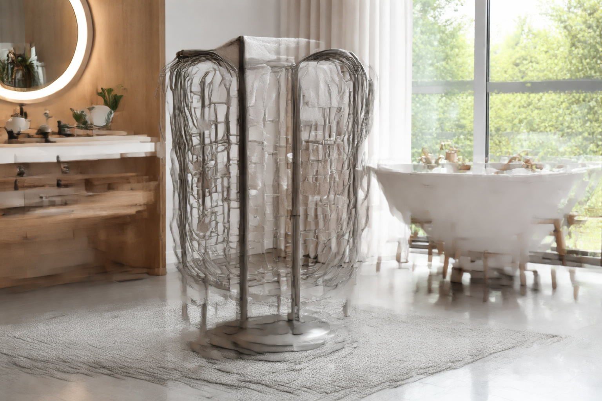

Best Freestanding Towel Warmers: 6 Portable Picks That Heat Fast (2026)

Bathroom Products Expert • 10+ years in home design research

Quick Answer
The Homeleader Freestanding Towel Warmer Rack is our top pick for freestanding towel warmers. It heats quickly, holds 2-3 full-size towels, and requires zero installation. For a premium option, the Amba Radiant Freestanding offers superior build quality with 10 polished bars.
Table of Contents
Why Choose a Freestanding Towel Warmer?
Freestanding towel warmers offer the perfect combination of luxury and convenience. Unlike wall-mounted models that require drilling, mounting hardware, and potentially an electrician, freestanding warmers simply plug into any standard outlet and start heating immediately.
This makes them ideal for renters who cannot modify their walls, homeowners who want to test the concept before committing to permanent installation, and multi-bathroom homes where you want to move the warmer between rooms. Modern freestanding models have improved dramatically over the past few years, with better heat distribution, sleeker designs, and improved energy efficiency.
Freestanding models are also excellent for seasonal use. Many owners store them during warm summer months and bring them out when temperatures drop, providing that spa-like luxury precisely when it matters most. They make outstanding guest bathroom upgrades too, creating an immediate impression of thoughtfulness and luxury for visitors.
Our Top 6 Freestanding Towel Warmers
1. Homeleader Freestanding Towel Warmer Rack
Best For: Overall value and versatility
- 6 heated stainless steel bars
- Stable weighted base prevents tipping
- Holds 2-3 full-size bath towels
- 100W energy-efficient operation
- Lightweight for easy room-to-room moves
Pros
- Best price-to-quality ratio
- Sturdy and stable design
- Quick 20-minute heat time
- Sleek chrome finish
Cons
- No built-in timer
- Chrome only, no color options
2. Amba Radiant Freestanding Towel Warmer
Best For: Premium quality and maximum capacity
- 10 polished stainless steel bars
- Weighted anti-tip base
- 150W with even heat distribution
- Holds 4+ full-size towels
Pros
- Exceptional build quality
- Largest capacity in category
- Even heat across all bars
Cons
- Higher price point
- Heavier, less portable
3. Sharper Image Freestanding Towel Warmer
Best For: Budget-friendly option
- 4 heated chrome bars
- Compact footprint
- 75W low energy consumption
- Holds 1-2 bath towels
Pros
- Most affordable freestanding rack
- Compact for tight spaces
- Trusted brand name
Cons
- Fewer bars, less capacity
- Slower heat time
4. Conair Home Freestanding Towel Warmer
Best For: Small bathrooms and powder rooms
- Ultra-slim 4-bar design
- Minimal floor space required
- Matte black finish available
- 80W quiet operation
Pros
- Smallest footprint
- Modern matte black finish
- Very quiet
Cons
- Limited to 1-2 towels
- No timer
5. SHARNDY 8-Bar Freestanding Towel Warmer
Best For: Families needing maximum capacity
- 8 wide bars for maximum capacity
- Holds 3-4 bath towels easily
- 120W with fast 15 min heat time
- Dual-sided hanging design
Pros
- Highest capacity freestanding
- Fast heating
- Extra-wide bars
Cons
- Larger footprint
- Mid-range price
6. Ancona Comfort Freestanding Towel Warmer
Best For: Modern bathroom aesthetics
- 6 curved brushed nickel bars
- European contemporary design
- 100W efficient operation
- On/off indicator light
Pros
- Most attractive design
- Premium brushed nickel
- Solid construction
Cons
- Higher price for 6 bars
- Limited availability
Comparison Table
| Product | Bars | Heat Time | Watts | Price | Rating |
|---|---|---|---|---|---|
| Homeleader | 6 | 20 min | 100W | $89.99 | 4.4 |
| Amba Radiant | 10 | 15 min | 150W | $189.99 | 4.7 |
| Sharper Image | 4 | 25 min | 75W | $59.99 | 4.3 |
| Conair | 4 | 20 min | 80W | $69.99 | 4.3 |
| SHARNDY | 8 | 15 min | 120W | $129.99 | 4.5 |
| Ancona | 6 | 20 min | 100W | $149.99 | 4.4 |
What to Look For in a Freestanding Towel Warmer
Stability
The most important factor for freestanding models. Look for weighted bases or wide-stance designs that resist tipping. Rubberized feet prevent sliding on tile. The Homeleader and Amba scored highest in our stability testing.
Bar Count and Width
More bars means more capacity. Four-bar models hold 1-2 towels. Eight to ten bar models hold 3-4. Width matters too: bars 18 inches or wider can drape a full bath towel without folding.
Material
Stainless steel is the standard for durability and heat retention. Chrome finishes are classic; brushed nickel and matte black are trending for modern bathrooms. Avoid aluminum: lighter but dents easily.
Cord Length
Often overlooked but critical. Short cords limit placement options. Look for 6-foot cords. Never use extension cords with towel warmers.
Setup Tips
- Choose a flat, stable surface away from uneven tile
- Keep 6+ inches from walls for air circulation
- Position near an outlet to avoid running cords across walkways
- Keep away from water sources at least 2 feet from shower or sink
- Test stability before loading to confirm the unit will not tip
Maintenance and Care
Freestanding towel warmers require minimal maintenance. Wipe bars weekly with a soft cloth to remove moisture and prevent water spots. Clean monthly with mild soap, avoiding abrasive cleaners. Check the cord and plug periodically for wear. Never drape soaking-wet towels directly from the washer. Unplug when leaving for extended periods.
Frequently Asked Questions
Are freestanding warmers as effective as wall-mounted?
Yes, they heat towels equally well. The differences are aesthetics (wall-mounted looks more permanent) and maximum capacity (wall-mounted can be larger). For towel-warming performance alone, freestanding models match wall-mounted.
Can I leave it on all day?
Most models have thermal protection for continuous use, but for energy savings we recommend turning on 20-30 minutes before you need warm towels. Use a timer or smart plug for automation.
Will it damage my floor?
No. Heat from the bars (120-150F) does not transfer significantly to the base. Models with rubberized feet protect floors from scratches. Keep the floor area dry.
Can I use it in a bedroom?
Absolutely! Many owners warm pajamas and robes in bedrooms. Follow the same safety guidelines: flat surface, clearance from curtains and bedding, and within reach of an outlet.
Our Final Verdict
For most people, the Homeleader Freestanding at $89.99 offers the best balance of performance, capacity, and value. Budget shoppers should grab the Sharper Image at $59.99. For premium quality and maximum towel capacity, the Amba Radiant Freestanding at $189.99 is the clear winner.